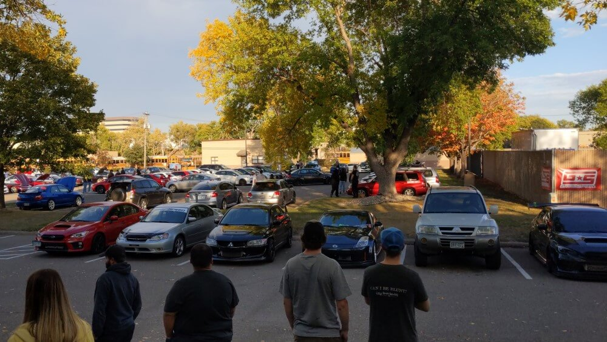

Cars
Cars have become an integral part of my life as I've grown into adulthood. My father has been a motorhead his whole life, and it didn't start rubbing off on me until I got my own car at 16.
My first car, a supercharged 1995 Buick Riviera.
You can imagine the way a modified, supercharged Riviera would get me more interested in cars as a young man.
Go figure, I'd end up with another one right after high school.
My second Riviera, a supremely clean 1998 low mile example.
My first Subaru, a 2003 Legacy GT wagon.
Soon after this, though, I would discover my love of Subaru.
Subarus would prove to be my ticket down the rabbit hole of car culture.
I fell in love with their styling and mechanics, and still can't get enough of them.
My first project car, a manual 1995 Subaru Impreza Base.
My current car, a 2007 Subaru Legacy Limited.
My "loaner car" when my car is getting work done, a manual 2003 STI swapped Subaru WRX.
My car journey has led me to where I am today, working for MN local performance company GrimmSpeed and being engrained in the community; and loving every second of it.
YouTube
Here's what we've been up to on our project car over at GrimmSpeed!
Google Map
If you're in the neighborhood, come check out my place of current employment, GrimmSpeed, in Minneapolis, MN.